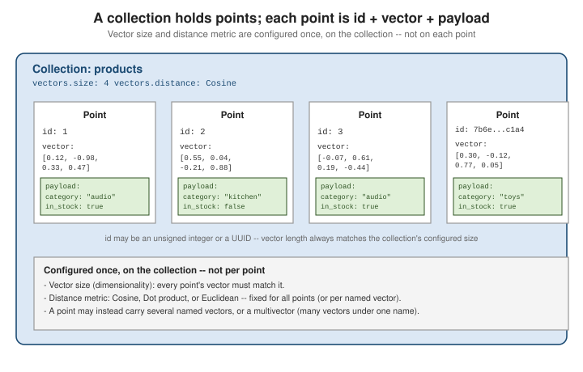

Collections & Points
|
This content was generated with the assistance of AI and should be verified against the official documentation before being relied on in production. |
Qdrant organizes data into collections of points. A collection fixes the shape every point in it must share — vector dimensionality and distance metric — while each point’s payload stays free-form JSON.
Collections
A collection is the top-level container Qdrant searches against. Creating one requires declaring, up front, the size (dimensionality) of the vectors it will hold and the distance metric used to compare them — these are fixed for the collection and apply to every point stored in it (unless you use Named vectors, where each named vector gets its own size/distance). See Collections for the full reference.
PUT /collections/{collection_name}
{
"vectors": {
"size": 4,
"distance": "Cosine"
}
}The equivalent with the Python client:
from qdrant_client import QdrantClient
from qdrant_client.models import Distance, VectorParams
client = QdrantClient(url="http://localhost:6333")
client.create_collection(
collection_name="products",
vectors_config=VectorParams(size=4, distance=Distance.COSINE),
)size and distance cannot be changed after creation without recreating the collection (or migrating to a
new one) — picking them correctly up front matters more in Qdrant than in most relational schemas.
name, vector config, HNSW and optimizer settings"] COL --> P1["Point: id 1"] COL --> P2["Point: id 2"] COL --> PN["Point: id ..."] P1 --> V1["Vector(s)
one dense vector, or named vectors,
sparse vectors, multivectors"] P1 --> PL1["Payload
free-form JSON"] V1 -.-> IDX["Vector index
HNSW per vector name"] PL1 -.-> PIDX["Payload indexes
per field, optional"]
The collection owns the configuration; points own only data. Everything on the dotted edges (the HNSW graph and the payload indexes) is derived structure that Qdrant maintains for you, as covered in the next two pages.
Creating a collection and looking at what it stores
Running the catalog from the running example makes the model concrete. The collection below is created once and then receives six points:
from qdrant_client import QdrantClient, models
client = QdrantClient(url="http://localhost:6333")
client.create_collection(
collection_name="products",
vectors_config=models.VectorParams(size=4, distance=models.Distance.COSINE),
)
client.upsert(
collection_name="products",
wait=True,
points=[
models.PointStruct(id=1, vector=[0.9, 0.1, 0.0, 0.1],
payload={"name": "Studio headphones", "category": "audio", "price": 249}),
models.PointStruct(id=2, vector=[0.8, 0.2, 0.1, 0.0],
payload={"name": "Bluetooth speaker", "category": "audio", "price": 89}),
models.PointStruct(id=3, vector=[0.7, 0.1, 0.2, 0.3],
payload={"name": "Soundbar", "category": "audio", "price": 399}),
models.PointStruct(id=4, vector=[0.1, 0.9, 0.1, 0.0],
payload={"name": "Mechanical keyboard", "category": "computing", "price": 129}),
models.PointStruct(id=5, vector=[0.0, 0.8, 0.3, 0.1],
payload={"name": "Ergonomic mouse", "category": "computing", "price": 59}),
models.PointStruct(id=6, vector=[0.1, 0.1, 0.9, 0.2],
payload={"name": "Espresso machine", "category": "kitchen", "price": 320}),
],
)GET /collections/products then reports the full configuration with its defaults filled in. The defaults worth
knowing, as returned by Qdrant 1.20, are one shard with one replica, m: 16 and ef_construct: 100 for the HNSW
graph, an indexing_threshold of 10000 (kilobytes) and on_disk_payload: true, meaning the payload lives on
disk and is read through the page cache rather than held in RAM:
{
"status": "green",
"points_count": 6,
"config": {
"params": {
"vectors": { "size": 4, "distance": "Cosine" },
"shard_number": 1,
"replication_factor": 1,
"write_consistency_factor": 1,
"on_disk_payload": true
},
"hnsw_config": { "m": 16, "ef_construct": 100, "full_scan_threshold": 10000, "on_disk": false },
"optimizer_config": { "indexing_threshold": 10000, "default_segment_number": 0, "...": "..." }
},
"payload_schema": {}
}An empty payload_schema means no payload index has been created yet; the payload is stored, but filtering on it
scans values. That is the subject of Filtering & Payload Indexing.
Points
A point is the unit Qdrant stores and returns from a search. It always has three parts:
-
id — either an unsigned integer or a UUID, unique within the collection.
-
vector — a dense float array matching the collection’s configured
size. -
payload — an arbitrary JSON object of key/value metadata (strings, numbers, booleans, arrays, nested objects) carried alongside the vector and returned with search hits.
See Points for the full reference.

IDs deserve a moment of design. An unsigned 64-bit integer is the cheapest id and the natural choice when the
points mirror rows of another database. A UUID is the right choice when the id must be generated without
coordination, or derived deterministically from content so a re-ingest overwrites rather than duplicates (the RAG
page derives chunk ids with uuid.uuid5 for exactly that reason). Anything else, such as the string "sku-17",
is rejected with value sku-17 is not a valid point ID, so a business key belongs in the payload, not in the id.
Upserting a point (create-or-replace by id):
PUT /collections/products/points
{
"points": [
{
"id": 1,
"vector": [0.12, -0.98, 0.33, 0.47],
"payload": { "category": "audio", "in_stock": true }
}
]
}from qdrant_client.models import PointStruct
client.upsert(
collection_name="products",
points=[
PointStruct(
id=1,
vector=[0.12, -0.98, 0.33, 0.47],
payload={"category": "audio", "in_stock": True},
)
],
)What is stored is not exactly what was sent
A collection with Cosine distance stores normalized copies of the vectors you send. Retrieving point 1 with
with_vectors=True returns the unit-length version of [0.9, 0.1, 0.0, 0.1]:
point = client.retrieve("products", ids=[1], with_vectors=True)[0]
print(point.vector)
# [0.9878784, 0.10976427, 0.0, 0.10976427]The direction is preserved and the magnitude is discarded, which is exactly what cosine similarity ignores anyway.
The consequence is that the vector read back can never be used to recover the original magnitudes, so keep the
raw embedding elsewhere if you need it. Of the four metrics, only Cosine normalizes on ingest; Dot, Euclid and Manhattan keep the vectors as sent.
Named vectors
A single point can carry several distinct named vectors instead of one, each with its own size and distance metric — useful when the same record is embedded by more than one model (e.g. a text embedding model and an image embedding model) and both should be searchable independently.
PUT /collections/products
{
"vectors": {
"text": { "size": 384, "distance": "Cosine" },
"image": { "size": 512, "distance": "Dot" }
}
}client.create_collection(
collection_name="products",
vectors_config={
"text": VectorParams(size=384, distance=Distance.COSINE),
"image": VectorParams(size=512, distance=Distance.DOT),
},
)
client.upsert(
collection_name="products",
points=[
PointStruct(
id=1,
vector={
"text": [0.01, 0.02, 0.03], # truncated for brevity, 384 dims
"image": [0.11, 0.22, 0.33], # truncated for brevity, 512 dims
},
payload={"category": "audio"},
)
],
)A search then names which vector to query against (using="text" in the Python client, or a using field
in the REST search body).
Worked example: text and image vectors on one product
The catalog can be extended with a second, 3-dimensional "image" vector. This collection (called catalog here so
it does not clash with products) gives every point a text vector compared by cosine and an image vector
compared by dot product. A point is allowed to omit a named vector: the Bluetooth speaker below has no image.
client.create_collection(
"catalog",
vectors_config={
"text": models.VectorParams(size=4, distance=models.Distance.COSINE),
"image": models.VectorParams(size=3, distance=models.Distance.DOT),
},
)
client.upsert("catalog", wait=True, points=[
models.PointStruct(id=1, vector={"text": [0.9, 0.1, 0.0, 0.1], "image": [1.0, 0.0, 0.0]},
payload={"name": "Studio headphones"}),
models.PointStruct(id=2, vector={"text": [0.1, 0.9, 0.1, 0.0], "image": [0.0, 1.0, 0.0]},
payload={"name": "Mechanical keyboard"}),
models.PointStruct(id=3, vector={"text": [0.8, 0.2, 0.1, 0.0]},
payload={"name": "Bluetooth speaker (no image)"}),
])
by_text = client.query_points("catalog", query=[0.9, 0.1, 0.0, 0.1], using="text")
by_image = client.query_points("catalog", query=[0.9, 0.1, 0.0], using="image")
print([(p.id, round(p.score, 3)) for p in by_text.points])
print([(p.id, round(p.score, 3)) for p in by_image.points])Output:
[(1, 1.0), (3, 0.978), (2, 0.217)]
[(1, 0.9), (2, 0.1)]The text search sees all three points; the image search sees only the two that have an image vector, because a
point is only part of a named vector’s index if it has a value for that name. Omitting using on a collection with
named vectors is an error (Not existing vector name error), so a multi-vector collection always names what it
searches. The query_points call shape for choosing among the vectors is also what hybrid search builds on in
Hybrid & Sparse Search.
Multivectors
A multivector is different from named vectors: it is multiple vectors under one name on a single point — for example one embedding per image patch, or the per-token embeddings a late-interaction (ColBERT-style)
model produces. Instead of averaging or picking one vector, Qdrant scores a multivector field with a
multi-vector comparator, most commonly max-sim (each query token vector is matched against its best
matching stored vector, and the per-token scores are summed).
PUT /collections/documents
{
"vectors": {
"colbert": {
"size": 128,
"distance": "Cosine",
"multivector_config": { "comparator": "max_sim" }
}
}
}from qdrant_client.models import MultiVectorConfig, MultiVectorComparator
client.create_collection(
collection_name="documents",
vectors_config={
"colbert": VectorParams(
size=128,
distance=Distance.COSINE,
multivector_config=MultiVectorConfig(comparator=MultiVectorComparator.MAX_SIM),
),
},
)
client.upsert(
collection_name="documents",
points=[
PointStruct(
id=1,
vector={"colbert": [[0.01, 0.02, 0.97], [0.03, 0.01, 0.95]]}, # one 128-d vector per token in practice
payload={"doc": "intro.pdf"},
)
],
)A runnable miniature uses 3-dimensional token vectors so the arithmetic can be checked by hand. Document 1 has
two token vectors pointing along the first two axes; document 2 has three, mostly along the third axis. The
query has two tokens, matching document 1 exactly:
client.create_collection("docs", vectors_config={
"colbert": models.VectorParams(
size=3, distance=models.Distance.COSINE,
multivector_config=models.MultiVectorConfig(comparator=models.MultiVectorComparator.MAX_SIM)),
})
client.upsert("docs", wait=True, points=[
models.PointStruct(id=1, vector={"colbert": [[1, 0, 0], [0, 1, 0]]}, payload={"doc": "a"}),
models.PointStruct(id=2, vector={"colbert": [[0, 0, 1], [0, 0, 1], [0.5, 0.5, 0]]}, payload={"doc": "b"}),
])
hits = client.query_points("docs", query=[[1, 0, 0], [0, 1, 0]], using="colbert")
print([(p.id, round(p.score, 3)) for p in hits.points])
# [(1, 2.0), (2, 1.414)]Document 1 scores 2.0: each of the two query tokens finds a stored token with cosine similarity 1.0, and
max_sim sums those per-token maxima. Document 2 scores 1.414: the first query token’s best match is
[0.5, 0.5, 0] with cosine 0.707, and the second query token’s best match is the same vector, so the sum is
0.707 + 0.707. Unlike a single averaged vector, a multivector keeps token-level evidence, which is why it is
used mostly as a re-ranker over candidates found by a cheaper index (see the re-ranking section of
Hybrid & Sparse Search).
Distance metrics
The distance metric is set once per collection (or per named vector) and determines how similarity is scored for every point stored under it.
| Metric | Use when |
|---|---|
|
Embeddings where only direction matters, not magnitude — the common case for text/sentence embedding models. Qdrant normalizes vectors internally, so unnormalized input still compares correctly. |
|
Vectors are already normalized (unit length) and you want the cheapest comparison — mathematically equivalent to cosine on normalized vectors, without the normalization cost at query time. Also the right choice when magnitude is meaningful and larger magnitude should score higher (e.g. some recommendation embeddings), since dot product is not magnitude-invariant like cosine. |
|
Raw L2 distance in the original vector space, where absolute distance between points is meaningful — e.g. spatial/coordinate data or embeddings not trained with a cosine/dot objective. |
The three metrics, plus Manhattan (L1, a fourth option), disagree in instructive ways. The experiment below puts
three points in a 2-dimensional collection — [1, 0], [3, 0] and [0, 1] — and queries each metric with
[2, 0]:
Cosine [(id 2, 1.0), (id 1, 1.0), (id 3, 0.0)] same direction scores 1.0 regardless of length
Dot [(id 2, 6.0), (id 1, 2.0), (id 3, 0.0)] longer vector in the same direction wins
Euclid [(id 2, 1.0), (id 1, 1.0), (id 3, 2.236)] distance, so smaller is better
Manhattan [(id 1, 1.0), (id 2, 1.0), (id 3, 3.0)] sum of absolute differencesCosine cannot tell [1, 0] from [3, 0]; dot product ranks the longer one first because it multiplies in the
magnitude; Euclid and Manhattan report a distance and so sort ascending, with a lower score being closer. Always
read a score together with the collection’s metric: a Cosine score of 1.0 is a perfect match, while a Euclid score
of 1.0 only means "distance one", and the lowest value wins.
Pick Cosine or Dot for most normalized embedding-model output (matching whatever objective the model was
trained with — check the model card); reach for Euclid when the raw magnitude and position of a vector
carries meaning rather than only its direction. The same three trade-offs apply, under different names, to
every other vector index on this site — see kNN / HNSW vector search's
VectorSimilarityFunction table for the equivalent comparison.
Where to go next
-
Getting Started with Qdrant — installing and running Qdrant, before creating collections.
-
Vector Indexing & HNSW — how the HNSW index built over a collection’s vectors makes search over these points fast.
-
Documents, BSON & data types — a contrasting baseline: MongoDB documents are flexible-schema JSON-like records with no fixed shape, while a Qdrant point is always the fixed triple of id, vector, and payload.